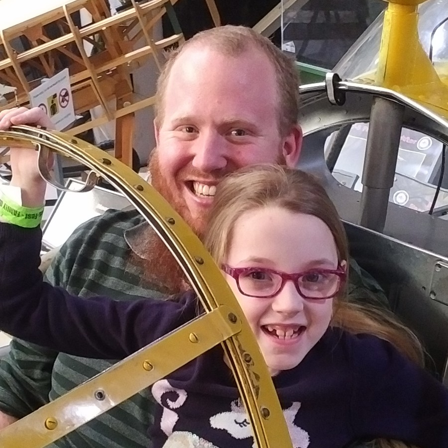

Mark Armstrong - Home Page
Software Engineer, M.Sc. Computer Science
Table of Contents

1. About me
I am a software engineer most recently working at Index Exchange, where I
- worked on the core application API team,
- developing backend APIs in Go
- incorporating technologies including Ansible and Redis,
- and practicing DevOps engineering using Docker, Kubernetes, Helm and GitLab pipelines and ArgoCD.
Formerly I was a PhD candidate, sessional lecturer and teaching assistant at McMaster University, with a focus on functional programming and the theory of programming languages.
I am an avid Emacs user (see my init here).
2. Portfolio
2.1. Open source projects/contributions
| Project | Contributions | Skills |
|---|---|---|
| consistent-window-splits (Emacs package) | Creator, sole contributor | Emacs Lisp |
| Ansible community.general collection | PR #9494: Keycloak modules retry request on authentication error, support refresh token parameter | Python, Ansible, Keycloak |
| PR #9727: Repair Keycloak integration tests by removing jinja2 templating from conditionals | ||
| org-agda-mode (Emacs package) | Co-creator, contributor | Emacs Lisp |
| unicode-sty (LaTeX package) | Co-creator, contributor | LaTeX, GitHub pages (armkeh.github.io/unicode-sty/) |
2.2. Personal projects
| Project | Skills |
|---|---|
| Sample Breakout game (playable online) | Typescript, GitHub actions, Excalibur.js engine |
| Personal dot files | Emacs Lisp, bash/zsh, nix/nixos |
| Org mode Resume template (in PDF/HTML/markdown formats) | LaTeX, HTML, CSS, Emacs Lisp, Emacs Org mode |
3. Blog
4. Teaching
4.1. Previous
- Fall 2020: CS 3MI3, Principles of Programming Languages
- Fall 2019: CS 3MI3, Principles of Programming Languages
- Fall 2018: CS 3MI3, Principles of Programming Languages
- Fall 2016: CS 3MI3, Principles of Programming Languages
- Winter 2014: CS 3MI3, Principles of Programming Languages (½ term)
4.2. Teaching assistant positions
- Winter 2021: CS 3AC3 Algorithms and Complexity
- Fall 2020: CS 4TH3 Theory of Computation
- Fall 2019: SE/CS 2DM3, Discrete Mathematics with Applications I
- Fall 2019: CS 4TH3, Theory of Computation
- Winter 2019: CS 3EA3, Specification and Correctness
- Fall 2018: SE/CS 2DM3, Discrete Mathematics with Applications I
- Winter 2018: SE/CS 2FA3, Discrete Mathematics with Applications II
- Fall 2017: CS 3MI3, Principles of Programming Languages
- Winter 2017: CS 2FA3, Discrete Mathematics with Applications II
- Winter 2017: CS 3TC3, Theory of Computation
- Winter 2016: CS 2FA3, Discrete Mathematics with Applications II
- Fall 2015: CS 3MI3, Principles of Programming Languages
- Winter 2015: CS 3MI3, Principles of Programming Languages
- Fall 2014: CAS 701, Discrete Mathematics
- Winter 2014: CS 3MI3 Principles of Programming Languages
5. Research
5.1. PhD
My PhD research was on formalisation of generalised computability theory.
By formalisation, I mean mechanisation, specifically in the proof assistant/programming language Agda.
By generalised computability theory, I mean theory of computable functions on topological algebras (such as the real numbers), rather than on the natural numbers.
- Poster on my research produced for the
2019 McMaster CAS department poster competition.
- Which won third place.
5.2. Masters
My Masters research investigated the validity of several results from classical computability theory in the context of computation over a topological algebras on the real numbers.
- Armstrong, Mark & Zucker, Jeffery, Notions of semicomputability in topological algebras over the reals, Computability, vol. 8, no. 1, pp. 1-26, 2019
5.3. Undergraduate
5.3.1. Summer 2013
Worked on incorporating abstract algebraic constructs into the MathScheme project's library under the supervision of Dr. Jacques Carette.
5.3.2. Summer 2010
Researched models of concurrency using Petri nets under Dr. Ryzard Janicki.
Continued research in a independent reading course in fall 2010.
6. Resume
My resume is hosted on my Github.
The HTML version is also embedded here for convenience. You may need to refresh the page or wait a short while for it to display correctly.
This website constructed in Emacs Org mode, exported to HTML and styled with Org HTML themes.